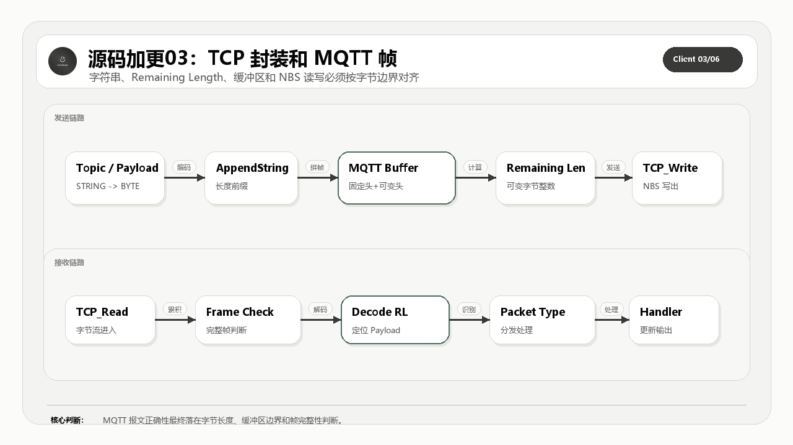

这一篇完整公开 TCP 读写封装、Remaining Length 编解码、字符串和载荷拼接。它是 MQTT 报文能否稳定落到 PLC 缓冲区的基础。
适合谁收藏
- 正在处理 TCP 粘包、半包、读写失败和缓冲区问题的工程师。
- 想把 MQTT Remaining Length 从规范条文落到 ST 代码的读者。
- 需要判断“报文错”和“传输层错”边界的人。
本篇核心图

读图重点：先看源码对象之间的职责边界，再看数据、状态和错误如何沿着调用链流动。源码加更不是把文件名列出来，而是把完整代码、工程意图和验证口径一起讲清楚。
先给结论
TCP 层只管字节通道，MQTT 层要自己判断完整报文、载荷长度和缓冲区边界。这层写不稳，上面所有 QoS 都会变成假稳定。
从理论到代码实现链路
MQTT 标准给的是报文类型、固定头、可变头、载荷、QoS 交互和会话语义；PLC 工程真正要解决的是周期扫描、缓冲区长度、错误锁存、在线变量、连接重入和现场可诊断性。
所以这套开源实现不能只按协议章节拆，也不能只按文件名拆。正确读法是把标准约束翻译成程序对象：入口程序负责给命令和观测点，GVL 和 DUT 定义容量与数据模型，主功能块负责调度状态机，构建方法负责出站报文，处理方法负责入站报文，辅助方法负责长度、队列、事务、主题和诊断边界。
本篇完整公开 TCP 封装、Remaining Length 工具、字符串载荷拼接和读缓冲方法。
再往下一层看，这里其实有两条线同时存在。第一条是协议线：固定头、Remaining Length、PacketId、QoS、Topic、Payload 和 Reason Code 必须能按 MQTT 规则组合起来。第二条是 PLC 工程线：每个周期只能推进有限步骤，所有中间状态都要能被在线变量观察，所有错误都要能被锁存并归类，所有缓冲区长度都要在写入前被检查。
这就是源码加更必须完整公开的原因。只给几段核心片段，读者最多能看懂某个判断；把完整对象放出来，读者才能看到对象之间如何传递状态、长度、错误和诊断信息。完整源码讲解不是为了堆代码，而是为了让读者能从标准约束一路追到可运行的 ST 对象，再从现场现象反向定位到具体边界。
本篇公开的完整源码范围
| 序号 | 源码对象 | 讲解重点 |
|---|---|---|
| 1 | FB_MqttClient.M_TcpClient.st | TCP 读写封装，隔离字节通道和 MQTT 状态机 |
| 2 | FB_MqttClient.M_TcpRead.st | TCP 读写封装，隔离字节通道和 MQTT 状态机 |
| 3 | FB_MqttClient.M_TcpWrite.st | TCP 读写封装，隔离字节通道和 MQTT 状态机 |
| 4 | FB_EncodeRemainingLength.st | 源码对象职责和验证边界 |
| 5 | FB_DecodeRemainingLength.st | 源码对象职责和验证边界 |
| 6 | M_EncodeRemainingLength.st | 源码对象职责和验证边界 |
| 7 | M_DecodeRemainingLength.st | 源码对象职责和验证边界 |
| 8 | M_AppendString.st | 源码对象职责和验证边界 |
| 9 | M_AppendPayload.st | 源码对象职责和验证边界 |
| 10 | M_CopyBytesToString.st | 源码对象职责和验证边界 |
| 11 | M_ReadIntoBuffer.st | 源码对象职责和验证边界 |
| 12 | M_IsValidUtf8String.st | 源码对象职责和验证边界 |
怎么读这些源码
第一遍只看对象职责：这个文件解决哪一层问题，是入口、模型、状态、构建、接收、事务，还是诊断。
第二遍看边界变量：长度、索引、PacketId、QoS、状态枚举、错误码、缓冲区水位和在线观测量。PLC 通信代码最怕的是“能跑但不可诊断”，所以每个关键对象都要问一句：现场出问题时，我能不能从它留下的变量看出原因。
第三遍再看具体语句。源码全部公开，不等于读者要从第一行顺序读到最后一行。更稳的方式是用图和表先建立地图，再回到完整代码里确认每个边界确实落地。
工程验证路径
用抓包和在线变量对照：TCP 读到的字节数、Remaining Length 解码结果、有效载荷长度和字符串转换结果必须一致。
本篇完整开源代码
完整代码 1：FB_MqttClient.M_TcpClient.st
这一段完整公开 FB_MqttClient.M_TcpClient.st。读代码时先看对象职责，再看状态、长度、错误和返回值，不要只抄几行赋值。
/// =======================================================================
/// 名称 : M_TcpClient
/// 功能 : 控制 TCP 客户端的连接与断开
/// 说明 : 封装 NBS TCP 客户端连接调用，输出连接状态与错误信息。
/// 编程人员 : ControlRookie
/// 时间 : 2026-01-10
/// 版本 : V1.1
/// =======================================================================
{attribute 'hide_all_locals'}
METHOD M_TcpClient
VAR_INPUT
bEnable : BOOL; // TCP 连接使能标志
sIP : STRING; // 服务器 IP 地址
uiPortNum : UINT; // 目标 Broker 提供 MQTT 服务的监听端口号
END_VAR
VAR_OUTPUT
bIsConnected : BOOL; // 连接成功标志
bError : BOOL; // 错误标志
eError : NBS.ERROR; // NBS 错误码
END_VAR
VAR
stIP : NBS.IP_ADDR; // 服务器地址结构
END_VAR
// === IMPLEMENTATION ===
// 把字符串地址先转成 NBS 需要的地址结构，再交给底层 TCP_Client。
stIP.sAddr := sIP;
fbTcpClient(
xEnable := bEnable,
ipAddr := stIP,
uiPort := uiPortNum,
eError => eError,
hConnection => hConnection);
// 统一把底层错误状态透传到上层状态机。
bError := fbTcpClient.xError;
// 只有底层已经 active 且句柄有效时，才认为 TCP 连接真正建立成功。
IF fbTcpClient.xActive AND fbTcpClient.hConnection <> 0 THEN
bIsConnected := TRUE;
ELSE
bIsConnected := FALSE;
END_IF完整代码 2：FB_MqttClient.M_TcpRead.st
这一段完整公开 FB_MqttClient.M_TcpRead.st。读代码时先看对象职责，再看状态、长度、错误和返回值，不要只抄几行赋值。
/// =======================================================================
/// 名称 : M_TcpRead
/// 功能 : 从 TCP 连接读取数据到接收缓冲区
/// 说明 : 封装 NBS.TCP_Read，读取成功后输出完成标志和实际字节数。
/// 编程人员 : ControlRookie
/// 时间 : 2026-05-05
/// 版本 : V1.2
/// =======================================================================
{attribute 'hide_all_locals'}
METHOD M_TcpRead
VAR_INPUT
bEnable : BOOL; // TCP 读取使能标志
pDataReceive : POINTER TO BYTE; // 接收数据区首地址
udiDataSize : UDINT; // 本次允许写入接收缓冲区的最大字节数[byte]
END_VAR
VAR_OUTPUT
bDone : BOOL; // 读取完成标志
bError : BOOL; // 错误标志
eError : NBS.ERROR; // NBS 错误码
udiBytesRead : UDINT; // 本次实际从 TCP 连接读取的字节数[byte]
END_VAR
// === IMPLEMENTATION ===
// 每周期持续调用底层 TCP_Read，是否真的读由 bEnable 控制。
fbTcpRead(
xEnable := bEnable,
xError => bError,
hConnection := hConnection,
szSize := udiDataSize,
pData := pDataReceive,
eError => eError);
// 只有底层声明 ready 且无错误时，才把本次读取结果上报给上层状态机。
IF fbTcpRead.xReady AND NOT fbTcpRead.xError THEN
bDone := TRUE;
udiBytesRead := TO_UDINT(fbTcpRead.szCount);
ELSE
bDone := FALSE;
udiBytesRead := 0;
END_IF
// 关闭读取使能时，显式把完成标志和本次字节数清零，避免上层误判复用旧结果。
IF NOT bEnable THEN
bDone := FALSE;
udiBytesRead := 0;
END_IF完整代码 3：FB_MqttClient.M_TcpWrite.st
这一段完整公开 FB_MqttClient.M_TcpWrite.st。读代码时先看对象职责，再看状态、长度、错误和返回值，不要只抄几行赋值。
/// =======================================================================
/// 名称 : M_TcpWrite
/// 功能 : 向 TCP 连接发送缓冲区数据
/// 说明 : 包装 NBS.TCP_Write，发送成功后置位完成标志。
/// 编程人员 : ControlRookie
/// 时间 : 2026-05-05
/// 版本 : V1.1
/// =======================================================================
{attribute 'hide_all_locals'}
METHOD M_TcpWrite
VAR_INPUT
bExecute : BOOL; // TCP 写入执行标志
pDataSend : POINTER TO BYTE; // 发送数据区首地址
udiDataSize : UDINT; // 本次计划发送的字节数[byte]
END_VAR
VAR_OUTPUT
bDone : BOOL; // 发送完成标志
bError : BOOL; // 错误标志
eError : NBS.ERROR; // NBS 错误码
END_VAR
// === IMPLEMENTATION ===
// 每周期持续调用底层 TCP_Write，是否真正触发发送由 bExecute 控制。
fbTcpWrite(
xExecute := bExecute,
xError => bError,
hConnection := hConnection,
szSize := udiDataSize,
pData := pDataSend,
eError => eError);
// 发送脉冲撤销时立即清掉完成锁存，确保下一次发送重新形成独立 done 事件。
IF NOT bExecute THEN
bWriteDoneLatched := FALSE;
ELSIF fbTcpWrite.xError THEN
bWriteDoneLatched := FALSE;
ELSIF fbTcpWrite.xDone THEN
// xDone 只要出现一次就锁存住，交给上层状态机在下一拍读取。
bWriteDoneLatched := TRUE;
END_IF
bDone := bWriteDoneLatched;完整代码 4：FB_EncodeRemainingLength.st
这一段完整公开 FB_EncodeRemainingLength.st。读代码时先看对象职责，再看状态、长度、错误和返回值，不要只抄几行赋值。
/// =======================================================================
/// 名称 : FB_EncodeRemainingLength
/// 功能 : 编码 MQTT 剩余长度字段
/// 说明 : 将载荷长度编码为 MQTT 可变字节整数格式
/// 编程人员 : ControlRookie
/// 时间 : 2026-01-10
/// 版本 : V1.1
/// =======================================================================
{attribute 'hide_all_locals'}
FUNCTION_BLOCK FB_EncodeRemainingLength
VAR_INPUT
uiNumberOfBytes : UINT; // 待写入报文头的 MQTT 剩余长度[byte]
END_VAR
VAR_OUTPUT
iEncodedBytesCount : INT; // MQTT 剩余长度编码结果的字节数[byte]
aEncodedBytes : ARRAY[0..3] OF BYTE; // MQTT 剩余长度编码结果缓冲区[byte]
END_VAR
VAR
byEncodedByte : BYTE; // 当前编码字节
uiTemp : UINT; // 中间长度变量
bContinue : BOOL; // 是否继续编码下一个字节
END_VAR
// === IMPLEMENTATION ===
// Remaining Length 采用 MQTT 可变字节整数编码：
// 每个字节低 7 位承载数值，最高位表示“后面还有没有后续字节”。
uiTemp := uiNumberOfBytes;
iEncodedBytesCount := 0;
REPEAT
byEncodedByte := TO_BYTE(uiTemp MOD 128);
uiTemp := uiTemp / 128;
// 只要后面还有剩余数值，就把续位标志位置 1。
IF uiTemp > 0 THEN
byEncodedByte := byEncodedByte OR 16#80;
bContinue := TRUE;
ELSE
bContinue := FALSE;
END_IF;
aEncodedBytes[iEncodedBytesCount] := byEncodedByte;
iEncodedBytesCount := iEncodedBytesCount + 1;
// MQTT 标准规定 Remaining Length 最多只允许编码成 4 个字节。
IF iEncodedBytesCount >= 4 THEN
bContinue := FALSE;
END_IF;
UNTIL (NOT bContinue)
END_REPEAT;完整代码 5：FB_DecodeRemainingLength.st
这一段完整公开 FB_DecodeRemainingLength.st。读代码时先看对象职责，再看状态、长度、错误和返回值，不要只抄几行赋值。
/// =======================================================================
/// 名称 : FB_DecodeRemainingLength
/// 功能 : 解码 MQTT 剩余长度字段
/// 说明 : 将 MQTT 可变字节整数格式解码为实际长度值
/// 编程人员 : ControlRookie
/// 时间 : 2026-01-10
/// 版本 : V1.1
/// =======================================================================
{attribute 'hide_all_locals'}
FUNCTION_BLOCK FB_DecodeRemainingLength
VAR_INPUT
pEncodedBytes : POINTER TO BYTE; // 指向 MQTT Remaining Length 编码起始字节的缓冲区指针
END_VAR
VAR_OUTPUT
uiDecodedLength : UINT; // 解码得到的 MQTT 剩余长度[byte]
uiBytesUsed : UINT; // 解码该长度字段实际消耗的字节数[byte]
bDone : BOOL; // 解码是否成功
END_VAR
VAR
uiMultiplier : UINT := 1; // 可变字节整数权重
uiValue : UINT := 0; // 解码中间值
byByte : BYTE; // 当前读取字节
pCurrent : POINTER TO BYTE; // 当前读取指针
uiCount : UINT := 0; // 当前已读取的编码字节数[byte]
END_VAR
// === IMPLEMENTATION ===
// Remaining Length 采用 MQTT 的可变字节整数编码，最多 4 个字节。
// 这里逐字节累乘 128 权重，把编码值还原成真实长度。
pCurrent := pEncodedBytes;
bDone := FALSE;
uiCount := 0;
WHILE uiCount < 4 DO
IF uiCount = 0 THEN
uiValue := 0;
uiMultiplier := 1;
END_IF
// 低 7 位是本字节贡献的值，最高位是“后面是否还有字节”的续位标志。
byByte := pCurrent^;
uiValue := uiValue + (BYTE_TO_UINT(byByte AND 16#7F) * uiMultiplier);
uiMultiplier := uiMultiplier * 128;
uiCount := uiCount + 1;
IF (byByte AND 16#80) = 0 THEN
bDone := TRUE;
EXIT;
END_IF;
pCurrent := pCurrent + 1;
END_WHILE;
IF bDone THEN
uiDecodedLength := uiValue;
uiBytesUsed := uiCount;
ELSE
// 超过 4 字节仍未结束时视为非法编码，输出清零并报失败。
uiDecodedLength := 0;
uiBytesUsed := 0;
END_IF;完整代码 6：M_EncodeRemainingLength.st
这一段完整公开 M_EncodeRemainingLength.st。读代码时先看对象职责，再看状态、长度、错误和返回值，不要只抄几行赋值。
/// =======================================================================
/// 名称 : M_EncodeRemainingLength
/// 功能 : 编码 MQTT 剩余长度字段
/// 说明 : 将剩余长度按 MQTT 可变长度格式写入缓冲区并返回字节数。
/// 编程人员 : ControlRookie
/// 时间 : 2026-05-05
/// 版本 : V1.0
/// =======================================================================
{attribute 'hide_all_locals'}
METHOD M_EncodeRemainingLength : UINT
VAR_INPUT
udiLength : UDINT; // 待编码写入报文头的 MQTT 剩余长度[byte]
pBuffer : POINTER TO BYTE; // 指向剩余长度编码输出起始地址的指针
END_VAR
VAR
uiBytes : UINT := 0; // 当前已写入的 VBI 编码字节数[byte]
byEncodedByte: BYTE; // 当前准备写入缓冲区的 1 个 VBI 编码字节
udiX : UDINT; // Remaining Length 编码过程中的剩余待分解数值[byte]
pByte : POINTER TO BYTE; // 当前 VBI 编码字节写入位置指针
uiLoopGuard : UINT := 0; // VBI 编码循环保护计数器（最多允许写 4 个字节）
END_VAR
// === IMPLEMENTATION ===
// Remaining Length 采用 MQTT 可变字节整数编码：
// 每个字节低 7 位承载数值，最高位表示“后面是否还有后续字节”。
pByte := pBuffer;
udiX := udiLength;
REPEAT
byEncodedByte := UDINT_TO_BYTE(udiX MOD 128);
udiX := udiX / 128;
// 只要后面还有剩余数值，就把续位标志位置 1。
IF udiX > 0 THEN
byEncodedByte := byEncodedByte OR 16#80;
END_IF
pByte^ := byEncodedByte;
pByte := pByte + 1;
uiBytes := uiBytes + 1;
// MQTT 标准规定 Remaining Length 最多只允许编码成 4 个字节，这里用保护计数强制收口。
uiLoopGuard := uiLoopGuard + 1;
UNTIL(udiX = 0 OR uiLoopGuard >= 4)
END_REPEAT
M_EncodeRemainingLength := uiBytes;完整代码 7：M_DecodeRemainingLength.st
这一段完整公开 M_DecodeRemainingLength.st。读代码时先看对象职责，再看状态、长度、错误和返回值，不要只抄几行赋值。
/// =======================================================================
/// 名称 : M_DecodeRemainingLength
/// 功能 : 解码 MQTT 剩余长度字段
/// 说明 : 从缓冲区解析可变长度编码，返回消耗字节数并输出长度值。
/// 编程人员 : ControlRookie
/// 时间 : 2026-05-05
/// 版本 : V1.0
/// =======================================================================
{attribute 'hide_all_locals'}
METHOD M_DecodeRemainingLength : UINT
VAR_INPUT
pBuffer : POINTER TO BYTE; // 指向 MQTT 剩余长度编码起始字节的指针
END_VAR
VAR_OUTPUT
uiLength : UINT; // 解码得到的 MQTT 剩余长度[byte]
END_VAR
VAR
uiBytes : UINT := 0; // 当前已消费的编码字节数[byte]
uiMultiplier : UINT := 1; // 可变字节整数权重
byEncodedByte : BYTE; // 当前编码字节
pByte : POINTER TO BYTE;// 当前读取指针
END_VAR
// === IMPLEMENTATION ===
pByte := pBuffer;
uiLength := 0;
REPEAT
byEncodedByte := pByte^;
uiLength := uiLength + ((byEncodedByte AND 127) * uiMultiplier);
uiMultiplier := uiMultiplier * 128;
pByte := pByte + 1;
uiBytes := uiBytes + 1;
UNTIL (byEncodedByte AND 128) = 0 OR uiBytes >= 4
END_REPEAT
M_DecodeRemainingLength := uiBytes;完整代码 8：M_AppendString.st
这一段完整公开 M_AppendString.st。读代码时先看对象职责，再看状态、长度、错误和返回值，不要只抄几行赋值。
/// =======================================================================
/// 名称 : M_AppendString
/// 功能 : 追加 UTF-8 字符串到发送缓冲区
/// 说明 : 先写入 2 字节长度前缀，再写入字符串内容并返回总字节数。
/// 编程人员 : ControlRookie
/// 时间 : 2026-05-05
/// 版本 : V1.0
/// =======================================================================
{attribute 'hide_all_locals'}
METHOD M_AppendString : UINT
VAR_INPUT
sStr : STRING(GVL_Mqtt.cnMaxPayloadSize); // 需要按 MQTT UTF-8 字符串格式写入的文本内容
pBuffer : POINTER TO BYTE; // 指向目标字符串写入起始地址的缓冲区指针
END_VAR
VAR
uiLen : UINT; // 待写入字符串内容长度[byte]
i : DINT; // 逐字节复制字符串内容时使用的循环索引
pWrite : POINTER TO BYTE; // 当前字符串写入位置指针
END_VAR
// === IMPLEMENTATION ===
uiLen := TO_UINT(LEN(sStr));
// 长度前缀（MSB + LSB）
pWrite := pBuffer;
pWrite^ := UINT_TO_BYTE(SHR(uiLen, 8));
pWrite := pWrite + 1;
pWrite^ := UINT_TO_BYTE(uiLen AND 16#FF);
// 字符串内容
pWrite := pBuffer + 2;
IF uiLen > 0 THEN
FOR i := 1 TO TO_DINT(uiLen) DO
pWrite^ := TO_BYTE(sStr[i - 1]);
pWrite := pWrite + 1;
END_FOR
END_IF
M_AppendString := uiLen + 2;完整代码 9：M_AppendPayload.st
这一段完整公开 M_AppendPayload.st。读代码时先看对象职责，再看状态、长度、错误和返回值，不要只抄几行赋值。
/// =======================================================================
/// 名称 : M_AppendPayload
/// 功能 : 追加消息载荷到发送缓冲区
/// 说明 : 按字节拷贝字符串载荷并返回写入字节数。
/// 编程人员 : ControlRookie
/// 时间 : 2026-05-05
/// 版本 : V1.0
/// =======================================================================
{attribute 'hide_all_locals'}
METHOD M_AppendPayload : UINT
VAR_INPUT
sPayload : STRING(GVL_Mqtt.cnMaxPayloadSize); // 需要原样拷贝到 MQTT 载荷区的字符串内容
pBuffer : POINTER TO BYTE; // 指向目标载荷写入起始地址的缓冲区指针
END_VAR
VAR
uiLen : UINT; // 待写入字符串载荷长度[byte]
i : DINT; // 逐字节复制载荷时使用的循环索引
pWrite : POINTER TO BYTE; // 当前载荷写入位置指针
END_VAR
// === IMPLEMENTATION ===
uiLen := TO_UINT(LEN(sPayload));
pWrite := pBuffer;
IF uiLen > 0 THEN
FOR i := 1 TO TO_DINT(uiLen) DO
pWrite^ := TO_BYTE(sPayload[i - 1]);
pWrite := pWrite + 1;
END_FOR
END_IF
M_AppendPayload := uiLen;完整代码 10：M_CopyBytesToString.st
这一段完整公开 M_CopyBytesToString.st。读代码时先看对象职责，再看状态、长度、错误和返回值，不要只抄几行赋值。
/// =======================================================================
/// 名称 : M_CopyBytesToString
/// 功能 : 将字节缓冲区复制到字符串
/// 说明 : 用顺序拷贝替代逐字符 CONCAT，降低接收解析中的字符串构造开销。
/// 编程人员 : ControlRookie
/// 时间 : 2026-05-07
/// 版本 : V2.0
/// =======================================================================
{attribute 'hide_all_locals'}
METHOD M_CopyBytesToString : BOOL
VAR_INPUT
pSource : POINTER TO BYTE; // 源字节缓冲区首地址
uiByteCount : UINT; // 计划从源缓冲区复制到字符串的字节数[byte]
END_VAR
VAR_IN_OUT
sTarget : STRING; // 目标字符串
END_VAR
VAR
pRead : POINTER TO BYTE; // 当前源读取指针
pWrite : POINTER TO BYTE; // 当前目标写入指针
uiCopyLen : UINT; // 实际复制字节数
uiTargetLen : UINT; // 目标字符串最大可写字符数
i : DINT; // 循环索引
END_VAR
// === IMPLEMENTATION ===
pWrite := ADR(sTarget);
// 零长度时按“合法空字符串”处理，显式写入终止符。
IF uiByteCount = 0 THEN
pWrite^ := 0;
M_CopyBytesToString := TRUE;
RETURN;
END_IF
// 空指针代表上游解析上下文异常，返回 FALSE 并输出空字符串。
IF pSource = 0 THEN
pWrite^ := 0;
M_CopyBytesToString := FALSE;
RETURN;
END_IF
// 目标缓冲区至少要能放下 1 个字符串结束符。
IF SIZEOF(sTarget) <= 1 THEN
pWrite^ := 0;
M_CopyBytesToString := FALSE;
RETURN;
END_IF
// 实际复制长度永远裁剪到目标字符串可容纳的最大字符数，避免越界写入。
uiTargetLen := TO_UINT(SIZEOF(sTarget) - 1);
uiCopyLen := uiByteCount;
IF uiCopyLen > uiTargetLen THEN
uiCopyLen := uiTargetLen;
END_IF
pRead := pSource;
IF uiCopyLen > 0 THEN
// 逐字节顺序拷贝比反复 CONCAT 更轻量，适合接收路径里的高频字符串组装。
FOR i := 1 TO TO_DINT(uiCopyLen) DO
pWrite^ := pRead^;
pWrite := pWrite + 1;
pRead := pRead + 1;
END_FOR
END_IF
// 手动补 0 结束符，把原始字节缓冲区显式收口成 IEC STRING。
pWrite^ := 0;
M_CopyBytesToString := TRUE;完整代码 11：M_ReadIntoBuffer.st
这一段完整公开 M_ReadIntoBuffer.st。读代码时先看对象职责，再看状态、长度、错误和返回值，不要只抄几行赋值。
/// =======================================================================
/// 名称 : M_ReadIntoBuffer
/// 功能 : 统一执行接收并累加到缓冲区
/// 说明 : 读取 TCP 数据并做边界检查，成功返回 TRUE
/// 编程人员 : ControlRookie
/// 时间 : 2026-05-08
/// 版本 : V2.0
/// =======================================================================
{attribute 'hide_all_locals'}
METHOD M_ReadIntoBuffer : BOOL
VAR
END_VAR
// === IMPLEMENTATION ===
// 先打开底层读取请求；真正是否拿到数据，由 M_TcpRead 回填的 bHasRead 决定。
bTcpRead := TRUE;
// 本周期底层还没拿到数据时，先退出，等待下一个扫描周期继续。
IF NOT bHasRead THEN
M_ReadIntoBuffer := FALSE;
RETURN;
END_IF
bTcpRead := FALSE;
// 把本次读取结果拼到接收缓冲区尾部前，先做容量保护。
IF uiRxLength + TO_UINT(udiBytesRead) > SIZEOF(aRxBuf) THEN
M_SetError(
uiErrorCode := TO_UINT(E_ReasonCode.uiErrBufferOverflow),
sMessage := 'Receive buffer overflow');
eState := E_MqttState.iTcpDisconnect;
M_ReadIntoBuffer := FALSE;
RETURN;
END_IF
uiRxLength := uiRxLength + TO_UINT(udiBytesRead);
M_ReadIntoBuffer := TRUE;完整代码 12：M_IsValidUtf8String.st
这一段完整公开 M_IsValidUtf8String.st。读代码时先看对象职责，再看状态、长度、错误和返回值，不要只抄几行赋值。
/// =======================================================================
/// 名称 : M_IsValidUtf8String
/// 功能 : 校验字符串是否满足 MQTT UTF-8 基础约束
/// 说明 : 当前实现做 PLC 可承受范围内的基础校验，拒绝 NUL、代理区与非法续字节
/// 编程人员 : ControlRookie
/// 时间 : 2026-05-05
/// 版本 : V1.0
/// =======================================================================
{attribute 'hide_all_locals'}
METHOD M_IsValidUtf8String : BOOL
VAR_INPUT
sValue : STRING(GVL_Mqtt.cnMaxTopicLen); // 待校验字符串
END_VAR
VAR
uiLen : UINT; // 字符串长度
uiIndex : UINT; // 当前扫描到待校验字符串的第几个字节位置
byLead : BYTE; // 首字节
byCont1 : BYTE; // 第 1 个续字节
byCont2 : BYTE; // 第 2 个续字节
byCont3 : BYTE; // 第 3 个续字节
END_VAR
// === IMPLEMENTATION ===
/// MQTT 字符串在协议层要求使用 UTF-8。
/// 这里按字节扫描，拒绝最常见的非法场景：
/// - NUL 字节
/// - 残缺多字节序列
/// - 非法续字节
/// - 代理区和超出 Unicode 上限的编码
uiLen := TO_UINT(LEN(sValue));
uiIndex := 1;
WHILE uiIndex <= uiLen DO
byLead := TO_BYTE(sValue[uiIndex - 1]);
/// MQTT UTF-8 字符串中不允许出现 NUL。
IF byLead = 0 THEN
M_IsValidUtf8String := FALSE;
RETURN;
END_IF
IF byLead < 16#80 THEN
/// 单字节 ASCII。
uiIndex := uiIndex + 1;
ELSIF (byLead >= 16#C2) AND (byLead <= 16#DF) THEN
/// 2 字节序列：110xxxxx 10xxxxxx
IF uiIndex + 1 > uiLen THEN
M_IsValidUtf8String := FALSE;
RETURN;
END_IF
byCont1 := TO_BYTE(sValue[uiIndex]);
IF (byCont1 < 16#80) OR (byCont1 > 16#BF) THEN
M_IsValidUtf8String := FALSE;
RETURN;
END_IF
uiIndex := uiIndex + 2;
ELSIF byLead = 16#E0 THEN
/// 3 字节序列特例：限制第二字节下界，避免过短编码。
IF uiIndex + 2 > uiLen THEN
M_IsValidUtf8String := FALSE;
RETURN;
END_IF
byCont1 := TO_BYTE(sValue[uiIndex]);
byCont2 := TO_BYTE(sValue[uiIndex + 1]);
IF (byCont1 < 16#A0) OR (byCont1 > 16#BF) OR
(byCont2 < 16#80) OR (byCont2 > 16#BF) THEN
M_IsValidUtf8String := FALSE;
RETURN;
END_IF
uiIndex := uiIndex + 3;
ELSIF ((byLead >= 16#E1) AND (byLead <= 16#EC)) OR ((byLead >= 16#EE) AND (byLead <= 16#EF)) THEN
/// 常规 3 字节序列。
IF uiIndex + 2 > uiLen THEN
M_IsValidUtf8String := FALSE;
RETURN;
END_IF
byCont1 := TO_BYTE(sValue[uiIndex]);
byCont2 := TO_BYTE(sValue[uiIndex + 1]);
IF (byCont1 < 16#80) OR (byCont1 > 16#BF) OR
(byCont2 < 16#80) OR (byCont2 > 16#BF) THEN
M_IsValidUtf8String := FALSE;
RETURN;
END_IF
uiIndex := uiIndex + 3;
ELSIF byLead = 16#ED THEN
/// 代理区特例：第二字节只能到 16#9F，避免落入 UTF-16 surrogate 范围。
IF uiIndex + 2 > uiLen THEN
M_IsValidUtf8String := FALSE;
RETURN;
END_IF
byCont1 := TO_BYTE(sValue[uiIndex]);
byCont2 := TO_BYTE(sValue[uiIndex + 1]);
IF (byCont1 < 16#80) OR (byCont1 > 16#9F) OR
(byCont2 < 16#80) OR (byCont2 > 16#BF) THEN
M_IsValidUtf8String := FALSE;
RETURN;
END_IF
uiIndex := uiIndex + 3;
ELSIF byLead = 16#F0 THEN
/// 4 字节序列下界特例：避免过短编码。
IF uiIndex + 3 > uiLen THEN
M_IsValidUtf8String := FALSE;
RETURN;
END_IF
byCont1 := TO_BYTE(sValue[uiIndex]);
byCont2 := TO_BYTE(sValue[uiIndex + 1]);
byCont3 := TO_BYTE(sValue[uiIndex + 2]);
IF (byCont1 < 16#90) OR (byCont1 > 16#BF) OR
(byCont2 < 16#80) OR (byCont2 > 16#BF) OR
(byCont3 < 16#80) OR (byCont3 > 16#BF) THEN
M_IsValidUtf8String := FALSE;
RETURN;
END_IF
uiIndex := uiIndex + 4;
ELSIF (byLead >= 16#F1) AND (byLead <= 16#F3) THEN
/// 常规 4 字节序列。
IF uiIndex + 3 > uiLen THEN
M_IsValidUtf8String := FALSE;
RETURN;
END_IF
byCont1 := TO_BYTE(sValue[uiIndex]);
byCont2 := TO_BYTE(sValue[uiIndex + 1]);
byCont3 := TO_BYTE(sValue[uiIndex + 2]);
IF (byCont1 < 16#80) OR (byCont1 > 16#BF) OR
(byCont2 < 16#80) OR (byCont2 > 16#BF) OR
(byCont3 < 16#80) OR (byCont3 > 16#BF) THEN
M_IsValidUtf8String := FALSE;
RETURN;
END_IF
uiIndex := uiIndex + 4;
ELSIF byLead = 16#F4 THEN
/// 4 字节序列上界特例：Unicode 最高只允许到 U+10FFFF。
IF uiIndex + 3 > uiLen THEN
M_IsValidUtf8String := FALSE;
RETURN;
END_IF
byCont1 := TO_BYTE(sValue[uiIndex]);
byCont2 := TO_BYTE(sValue[uiIndex + 1]);
byCont3 := TO_BYTE(sValue[uiIndex + 2]);
IF (byCont1 < 16#80) OR (byCont1 > 16#8F) OR
(byCont2 < 16#80) OR (byCont2 > 16#BF) OR
(byCont3 < 16#80) OR (byCont3 > 16#BF) THEN
M_IsValidUtf8String := FALSE;
RETURN;
END_IF
uiIndex := uiIndex + 4;
ELSE
/// 其余首字节模式都不属于 MQTT 可接受的 UTF-8 编码。
M_IsValidUtf8String := FALSE;
RETURN;
END_IF
END_WHILE
M_IsValidUtf8String := TRUE;这一篇你最该记住的几句话
- 源码加更不是片段展示，而是完整源码对象公开讲解。
- 先建立对象地图，再读状态、报文和事务，现场调试才不会迷路。
- 判断源码成熟度，不只看功能是否实现，还要看边界、错误和在线观测量是否闭环。
系列导航
- 系列定位：MqttClient 系列教程，源码加更阶段，第 13 篇 / 共 16 篇
- 上一篇：源码加更02
- 下一篇：源码加更04
评论区预留
这里先保留评论和回复结构，不接入第三方服务。后续统一决定登录、匿名、审核、反垃圾和静态站兼容策略。